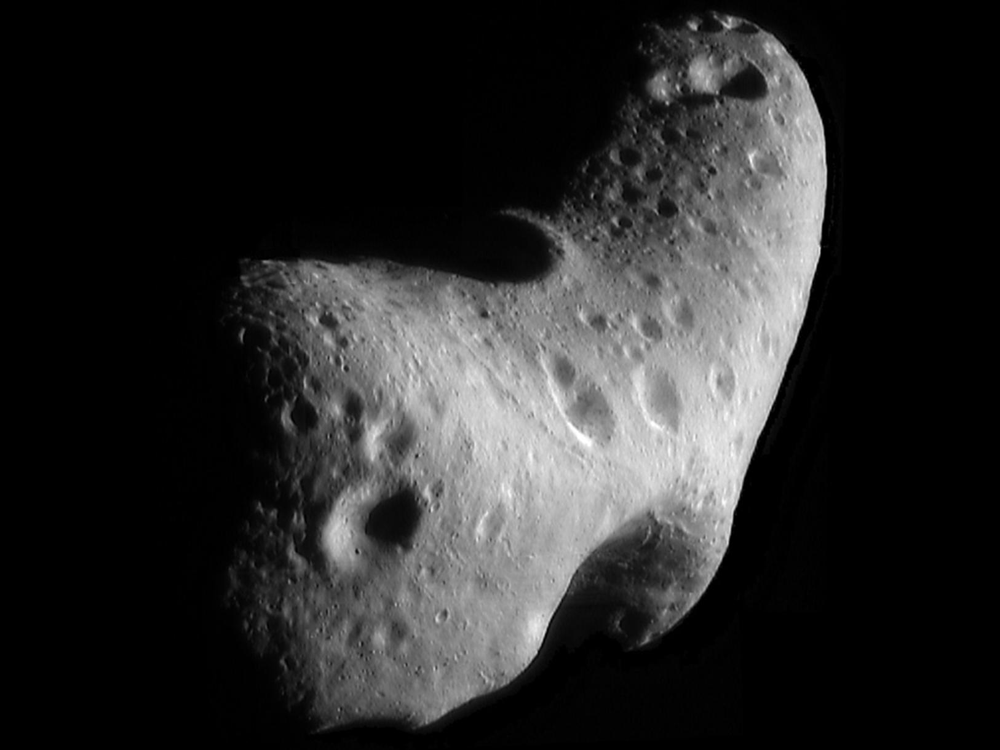

Other Stories
Spacecraft have not only been left behind on Mars, the Moon, or in deep space. Throughout history, humanity has also sent space probes that have reached asteroids, comets, dwarf planets, and moons orbiting other planets. Some of these spacecraft completed their missions on the surfaces of these celestial bodies, others remained in orbit around them, while some continued their journeys, moving farther and farther away from the Sun.
Each of these missions helped expand our knowledge of the solar system by exploring lesser-known but equally fascinating and important destinations. We invite you to discover their stories and learn about their contributions to science.
We invite you to learn more about these abandoned, but never forgotten, spacecraft.
Near Shoemaker, The Probe That Wasn’t Built to Land:
Meet the first spacecraft to land on an asteroid. It was never designed to do it, and it has been silent ever since. Follow its journey and discover why it hasn’t been forgotten.
Work in Progress
Due to time constraints, we were not able to create all the animations we wanted. Some of the stories still pending are those of the Apollo 10 Lunar Module “Snoopy”, which drifts around the Sun after its trip to the Moon; Dawn, which remains silently orbiting the dwarf planet Ceres; ISEE-3/ICE, the spacecraft that flew through a comet’s tail and was later contacted by a citizen-led effort; Ulysses, which explored Jupiter and the Sun’s poles and remains in orbit around the Sun; and Huygens, the probe that landed on Saturn’s moon Titan, where it remains today.
If we extend the idea of “abandoned” to include spacecraft whose missions ended in a deliberate destruction, many more stories could be told, such as those of Cassini, Galileo, Juno, MESSENGER, and Magellan. We leave it to NASA to decide whether those stories belong in this museum.
Finally, the Others section has the potential to hold a great many more stories. Spacecraft that orbit the Sun, visit asteroids and comets, or explore Mercury and Venus could each become a new wing of the museum. Here we only mention a few of them.